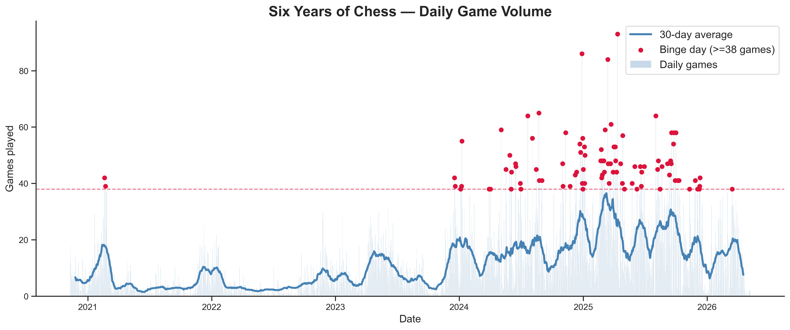
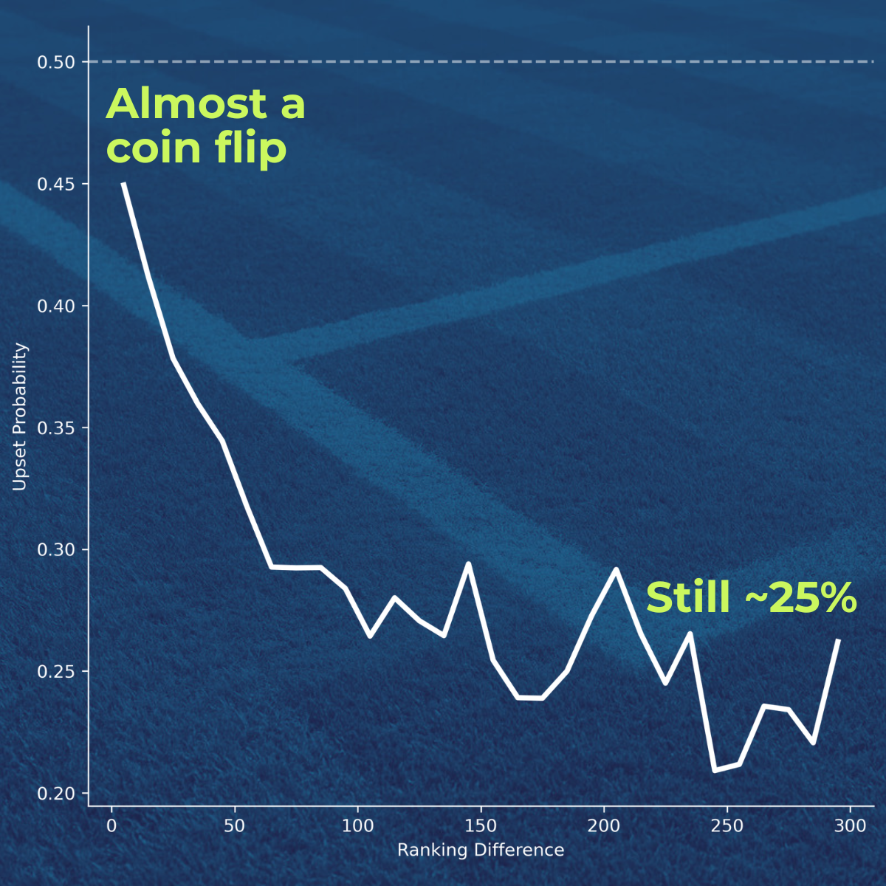
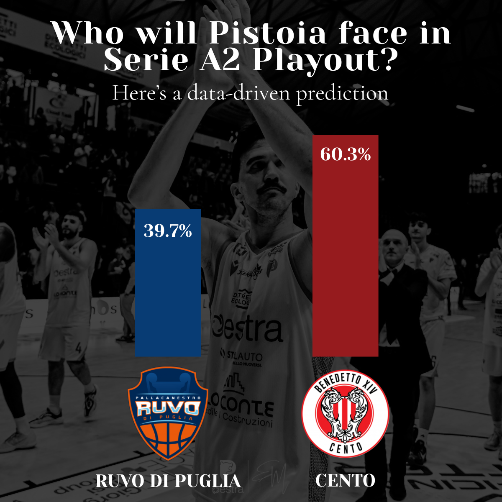

Chess.com behavioral analysis
A personal Chess.com analysis exploring six years of game history, daily playing volume, binge-day patterns and long-term behavior through reproducible charts.
I am a web developer moving deeper into data analytics, with a strong focus on sports analytics, Python notebooks, reproducible workflows and visual explanations built for real audiences.
Selected analyses focused on asking a clear question, building a reproducible workflow and communicating the result visually.

A personal Chess.com analysis exploring six years of game history, daily playing volume, binge-day patterns and long-term behavior through reproducible charts.

An analysis of ATP matches exploring how ranking difference relates to the probability of an upset, with binned curves and chart-ready outputs for editorial publishing.

A basketball analytics notebook built to answer a practical question: who is Pistoia most likely to face in the Serie A2 playout, using available team data and clear assumptions.
A mix of analytics, communication and production skills from web development and sports media work.
Python, Pandas, SQL, exploratory analysis, data cleaning.
Matplotlib, Datawrapper, dashboard thinking, chart storytelling.
HTML, CSS, JavaScript, Laravel, Vue, Git, Docker.
LinkedIn writing, match reports, commentary, audience-first explanations.
I am Simone Morieri, a web developer based in Tuscany, Italy. My background is in building websites and digital products, and I am now applying that technical foundation to data analytics.
My strongest interest is sports analytics: turning raw match data into insights that coaches, fans and decision-makers can actually use.
I am interested in opportunities where data, product thinking and communication meet: Data Analyst roles, web/data hybrid roles, and sports analytics projects.